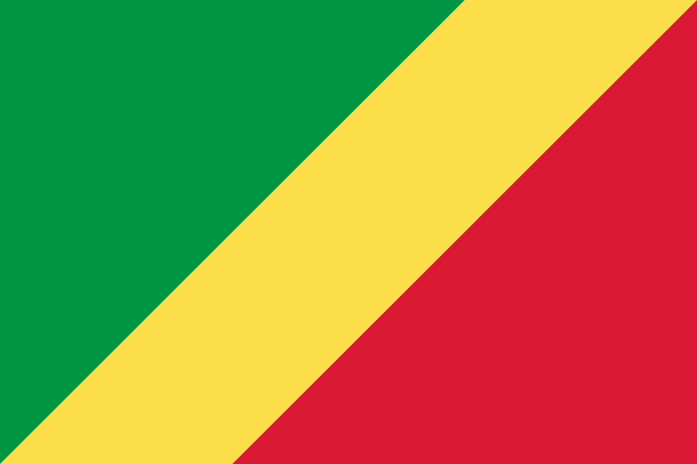
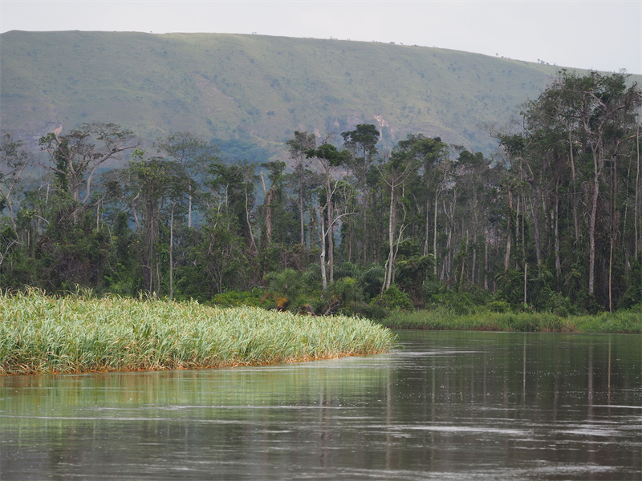
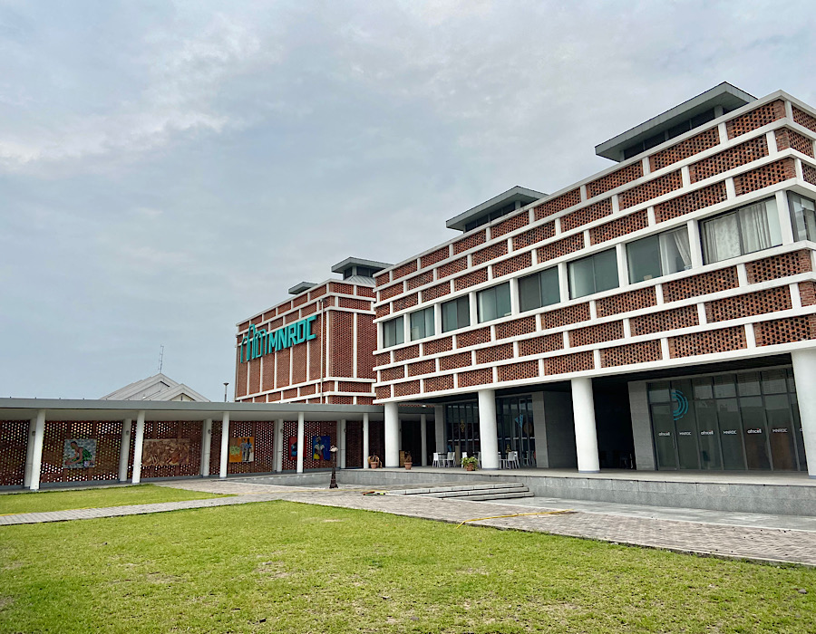
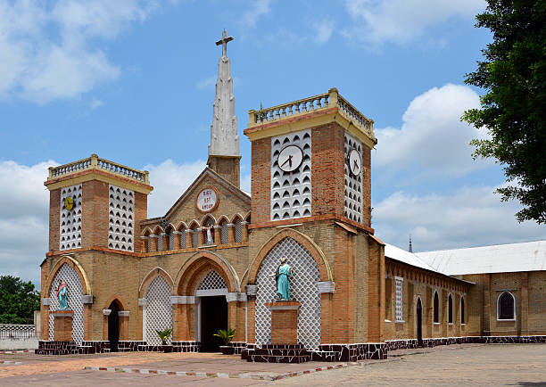

コンゴ共和国

1.位置や分布
コンゴ共和国は中央アフリカに位置しています。
コンゴという名前は、バンツー語の一方言で「山」という意味です。

2.場所
コンゴ共和国には、観光スポットも多くあります。
そのなかで厳選して3つの観光スポットを紹介します。
レジオ・ルナ・ゴリラ保護区
コンゴ共和国の首都ブラザヴィルから車で3時間ほど走ると、青の湖と言われる美しい湖があり、その湖のかなたにある深い森がローランドゴリラの保護区になっています。
観光客が少なく、手つかずのままの自然が味わえる場所となっています。

(よく見ると写真中央にゴリラがいます)
コンゴ国立博物館
コンゴ共和国の首都であるブラザヴィルという名前は、その土地を初めて発見した、ピエール・ブラザ卿にちなんでつけられました。
コンゴ国立博物館は、そのピエール・ブラザ卿が眠っているといわれています。

ブラザビル大聖堂
1887年に建てられた、中央アフリカでいちばん古い建物です。
多くの観光客が訪れるスポットなので、周辺には宿泊施設が数多く存在します。

続き